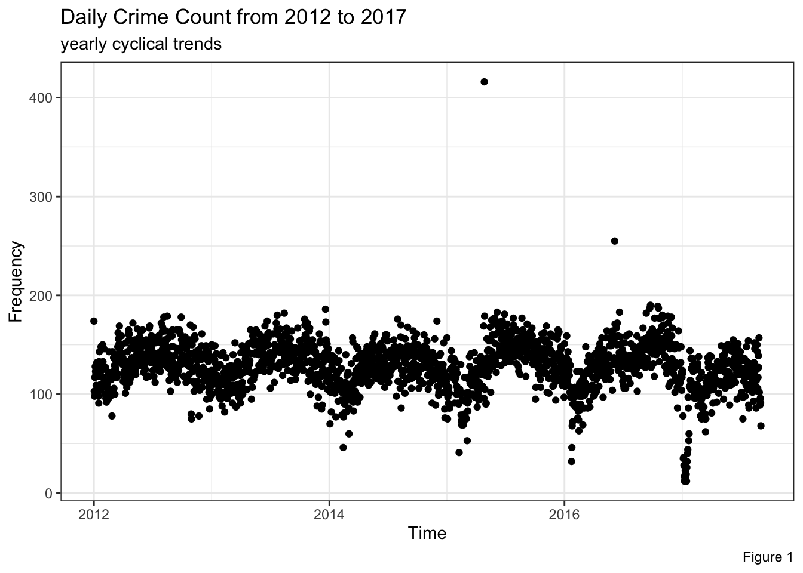
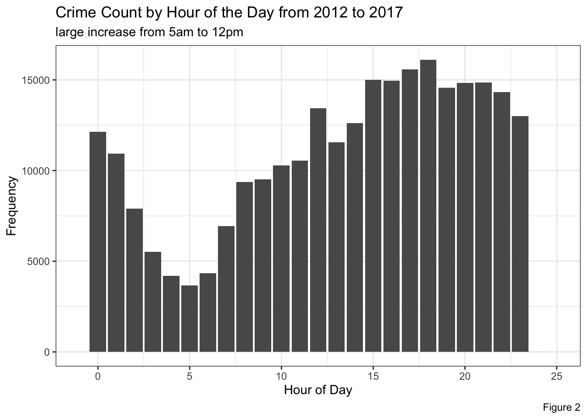
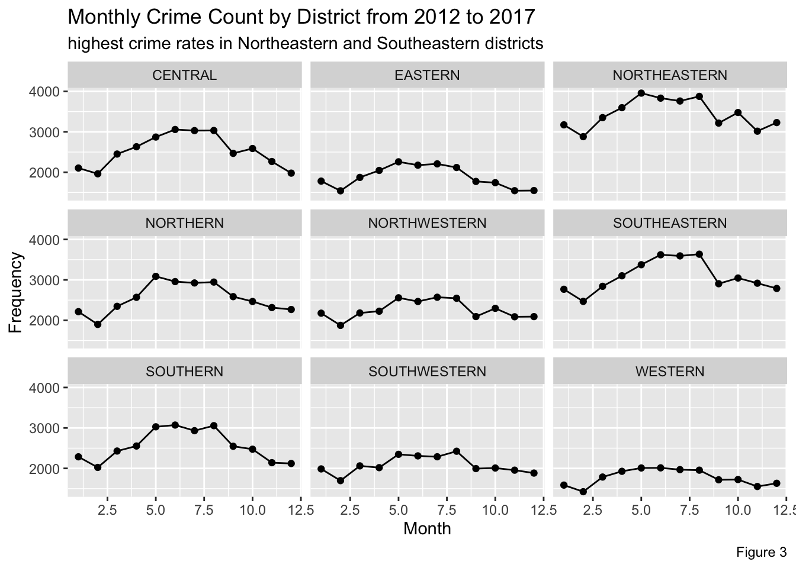

For this example data analysis, I chose to use a Baltimore crime dataset. I aim to answer the question: how does crime rate depend on time and is crime rate constant over time? The intended audience for the data analysis is government officials of the city of Baltimore. The goal of this analysis is to reveal trends in crime rate that government officials can use to better allocate resources. The data and data dictionary are available on this website: https://www.kaggle.com/datasets/sohier/crime-in-baltimore, this analysis uses a subset of the data. (Dane 2017)
Note
This data analysis is building upon my assignment from Advanced Methods in Biostatistics last year.
The following objects are masked from 'package:base':
date, intersect, setdiff, union
library(dplyr)
Warning: package 'dplyr' was built under R version 4.1.2
Attaching package: 'dplyr'
The following objects are masked from 'package:stats':
filter, lag
The following objects are masked from 'package:base':
intersect, setdiff, setequal, union
#lubridate functions are all from the tidyverse, data wrangling functionscrime_data$CrimeDate <-mdy(crime_data$CrimeDate)crime_data$CrimeTime <-hms(crime_data$CrimeTime)crime_data$Year <-year(crime_data$CrimeDate)crime_data$Month <-month(crime_data$CrimeDate)crime_data$Month_Year <-floor_date(crime_data$CrimeDate, "month")crime_data$Hour <-hour(crime_data$CrimeTime)#mutate is data wrangling functioncrime_data <- crime_data %>%mutate(Time_of_Day =case_when( Hour <=6~"Night", Hour >6& Hour <=12~"Morning", Hour >12& Hour <=18~"Afternoon", Hour >18~"Evening"))crime_data$Inside.Outside <-substr(crime_data$Inside.Outside,1,1)
This plot showed me that the crime data is not one that is strictly increasing over time. It seems to be cyclical - we can see regular increases followed by decreases repeating during this time period.
The first known use of the word “cyclic” was in the year 1794! (Merriam-Webster 2022)
library(ggplot2)#remove 80 crimes without districtcrime_data_districts <- crime_data[!crime_data$District=="",]#remove 10277 crimes without inside/outside infocrime_data_districts_inside <- crime_data_districts[!crime_data_districts$Inside.Outside=="",]#group by datecrime_data_grouped_date <- crime_data_districts_inside %>%count(CrimeDate)ggplot(crime_data_grouped_date, aes(x = CrimeDate, y = n)) +geom_point() +theme_bw() +labs(title ="Daily Crime Count from 2012 to 2017", subtitle ="yearly cyclical trends", caption ="Figure 1") +xlab("Time") +ylab("Frequency")

I plotted total crimes by hour to see the trend. There is an increasing trend of crime after 5:00am that reaches its peak from 12:00pm to 8:00pm.
ggplot(crime_data_districts_inside, aes(x = Hour)) +geom_bar() +theme_bw() +ylab("Frequency") +xlab("Hour of Day") +labs(title ="Crime Count by Hour of the Day from 2012 to 2017", subtitle ="large increase from 5am to 12pm", caption ="Figure 2") +xlim(c(-1,25))

I plotted the total number of crimes separated by district over a calendar year. Districts show similar monthly trends, but with different starting points. In each month, the crimes in the Northeastern and Southeastern district are the highest, while the crimes in the Western and Eastern districts are the lowest.
crime_data_monthly_district <- crime_data_districts_inside %>%count(Month,District)ggplot(aes(x=Month, y=n), data = crime_data_monthly_district) +geom_point() +geom_line() +facet_wrap(~District) +ylab("Frequency") +labs(title ="Monthly Crime Count by District from 2012 to 2017", subtitle ="highest crime rates in Northeastern and Southeastern districts", caption ="Figure 3")

Learn More About Districts
To learn more about individual districts, you can visit this website: https://www.baltimorepolice.org/find-my-district.
Based on the exploratory data analysis, crime rate is clearly not constant over time. Based on Figure 1, we can see that crime rate does not increase steadily over time, and instead follows a yearly cyclical pattern. Crime does not stay constant and district is an important factor to consider. First, we will talk about monthly crime. Based on Figure 3: in each month, the crimes in the Northeastern and Southeastern district are the highest, while the crimes in the Western and Eastern districts are the lowest. There is more crime in summer months across districts. Second, we will talk about hourly crime. There is an increasing trend of crime after 5:00am that reaches its peak from 12:00pm to 8:00pm based on Figure 2. Law enforcement should increase resource allotment between the months of April and August to deal with increased crime. In addition, they should similarly focus daily resources between 3:00pm to 9:59pm due to the higher frequency of crime during those hours. Law enforcement should enact more safety programs and perhaps implement more/better trained police officers in the Northeastern and Southeastern districts. It is important to recognize that Baltimore community members may not feel safer with increased police presence due to the history of police violence in this community. This figure below from a report by Morgan State University shows the level of satisfaction with the Baltimore Police Department from a sample of residents (Pratt-Harris and Winbush 2020).